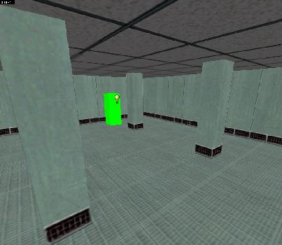
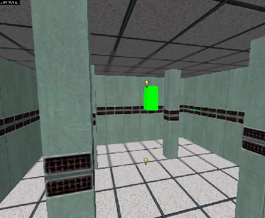
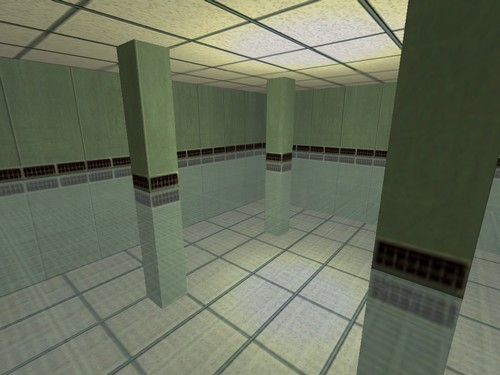
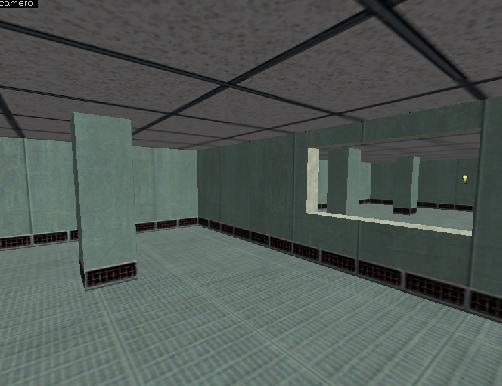
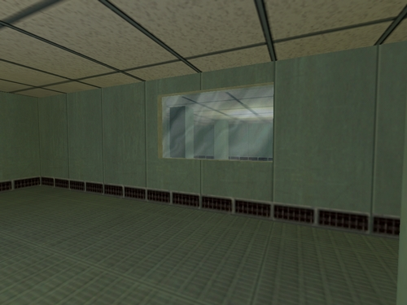
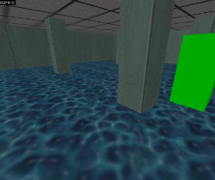
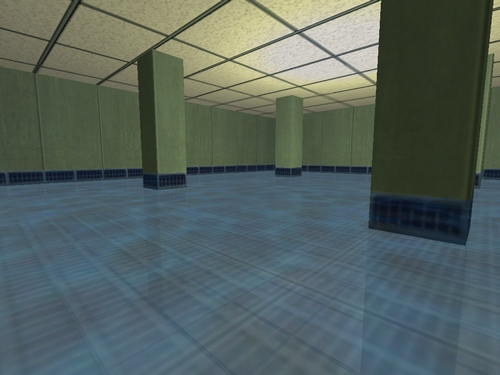
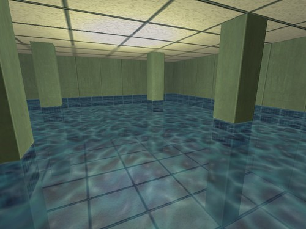

Dans ce tutorial je vais vous apprendre à créer des effets de reflets. Bien évidement ça ne sera pas aussi beau que sous HL² mais ça peut quand même faire de beaux effets!
Nous allons commencer par voir comment réaliser un sol qui reflète l'environnement.
Pour commencer, créez une salle comme ceci:

Ensuite, il faut "modéliser" le reflet. Pour cela il suffit de remapper la sale à l'envers sous le sol qui sera rendu transparent. Voilà le résultat sans le sol:

Il nous reste plus qu'a rendre le sol transparent. Sélectionnez-le et transformez-le en func_wall. Réglez les paramètres comme ceci:
Render Mode: Texture FX Amount: 120
Au niveau des lumières, mettez le même nombre de lights dans les deux cotés pour éviter que le reflet soit plus sombre ou éclairé et inversement.
Voici le résultat sous le jeu:

Notez que les persos (monstres, scientifiques...) et les armes ne sont pas reflétés ainsi que le joueur lui-même. Le sky ne sera pas reflété non plus, cette technique est donc plutôt conseillée pour les intérieurs.
Voilà pour ce qui est du reflet du sol. Passons maintenant à l'effet de miroir.
Nous allons à présent voir comment réaliser un effet de miroir. Bien évidement, le joueur ne sera pas reflété dedans ni les monstres, scientifiques et armes.
Créez votre salle, avec un trou à l'emplacement du miroir. Ensuite, comme pour le reflet du sol, recréez la salle de l'autre coté du mur qui portera le miroir, comme ceci:

Créez ensuite un bloc dans le trou du miroir avec une texture de vitre et rendez-la transparente.
Voilà le résultat après compilation:

Pas mal non? :)
Bien évidement, la vitre ne doit pas pouvoir être brisée car le décor derrière sera toujours là et ça fera un effet bizarre...
Nous allons voir comment réaliser un effet de reflet dans de l'eau. Cette technique est pratiquement la même que pour le reflet du sol.
Pour l'exemple, je vais dire que ma salle a été inondée. Reprenons notre salle avec le reflet du sol:
Je vais à présent rajouter au-dessus du sol un bloc "func_water" avec une texture d'eau:

A ce moment, vous avez 2 solutions: soit vous avez une eau qui reflète un peu et donc on voit le sol, soit l'eau reflète beaucoup et le sol est invisible.
Pour la première solution, il suffit de reprendre la salle avec le reflet du sol, rajouter un bloc d'eau au dessus, rendre transparent l'eau et le tour et joué! Ca donnera un résultat comme ceci:

Pour la seconde solution, il suffit de remplacer la texture du sol par la texture invisible {BLUE ou {INVISIBLE (et de le rendre invisible comme expliqué dans la partie du miroir) ou la texture NULL. Ca donnera quelque chose de ce genre:

Vous pouvez toujours changer la texture d'eau, je vous le conseille justement car la texture que j'ai utilisée pour l'exemple ne rend pas trop...Mais vous pouvez voir que ça peut donner de bons effets! Je vous conseille également de faire plusieurs effets en modifiant la transparence de l'eau et du sol. Voilà de ce qui en est pour l'eau. Pour finir, je vous conseille de lire la dernière partie qui peut se relever très utile :)
Pour finir, voici quelques techniques qui vous seront très utiles!
Reflet d'un objet cassable
Il suffit de faire votre objet ainsi que son reflet puis de les sélectionner tous les deux (avec la touche ctrl) et de les transformer en func_breakable. Ainsi lorsque vous casserez l'objet, son reflet se brisera aussi. Seul défaut: les débris du reflets tomberont aussi vers le bas...
Reflet d'un model
Vous pouvez faire refléter certains models et positionnant un second model à l'envers. Attention, il faut bien le positionner et éviter que le model soit dans un mauvais sens!
Reflet d'un func_train
Pour refléter un func_train, il suffit de le remapper à l'envers en dessous du train réel, et de créer le bloc origin bien au centre du train (entre le train et son reflet en quelque sorte). Les path_tracks devront être placés au même niveau que le bloc origin.
Reflet d'un func_vehicle
Pareil que pour le train sans les path_tracks. En revanche, le véhicule doit pouvoir passer partout, qu'il y ai un sol reflétant ou non! Vous devrez donc faire en dessous du sol où le véhicule peut passer une cavité pour permettre au reflet de pouvoir passer sans se cogner dans un bloc. Le bloc origin ne doit également pas être placé dans le sol!
Voilà, en espérant que ces techniques vous serviront un jour : D
Vous savez à présent comment réaliser de beaux reflets sous Half-Life premier du nom! ;)